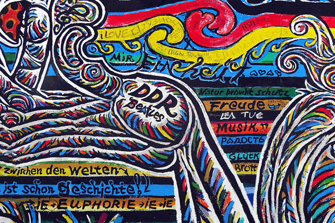

Urban Art Fair 2020
Publié le 4 juin 2020

La cinquième édition aura lieu au Carreau du temple du 20 au 23 septembre 2020. L'occasion de faire de belles découvertes ou d'admirer les oeuvres d'artistes incontournables.
L’innovation de cette foire est la pluralité des événements qui en découle. Pour l’occasion, le Carreau du Temple réitère les projections cinématographiques autour du street art.
Cette année la foire se déplace aussi hors les murs avec la présentation inédite de l’exposition « Cannot be Bo(a)rdered » à découvrir en entrée libre du septembre au 7 novembre 2020 à l’Espace Commines. Une trentaine d’artistes venus de Singapour, Malaise et Indonésie on mis en place cette exposition autour de la culture du skate board.
Lire la suite
Vente solidaire de Street Art
Publié le 17 mai 2020

A contexte exceptionnel, moyens exceptionnels. Emmaüs International a fait appel à la Galerie d’art en ligne KAZoART. Plus de 60 Street artistes se sont mobilisés, dont des artistes qui suivent le mouvement Emmaüs depuis de nombreuses années.
Artistes renommés ou émergents, tous ont accepté de faire don d’une ou plusieurs de leurs oeuvres au profit d’une grande Vente Solidaire de Street Art, qui se déroulera en ligne sur KAZoART, à compter du 12 juin 2020.
Les bénéfices de cette vente solidaire seront intégralement reversés au fonds d’urgence d’Emmaüs International, réparti entre les communautés d’Emmaüs du monde entier en fonction de leurs besoins.
Lire la suite